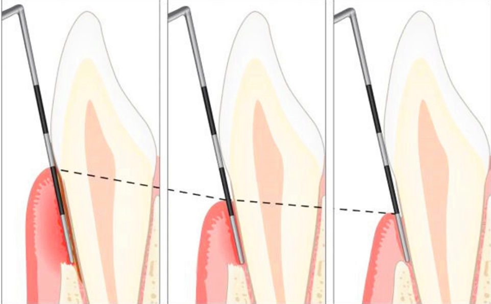
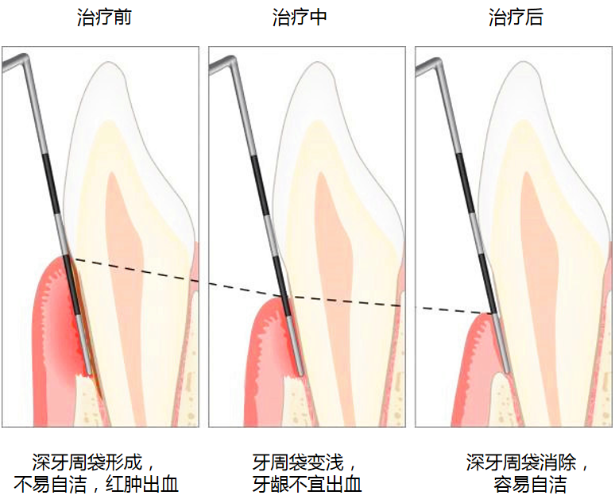
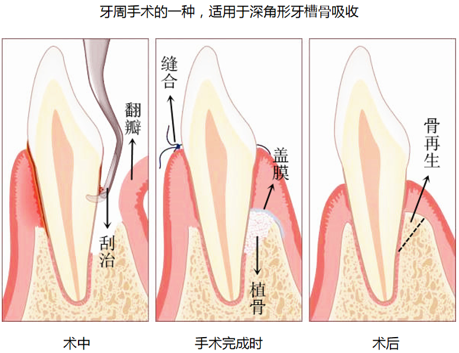
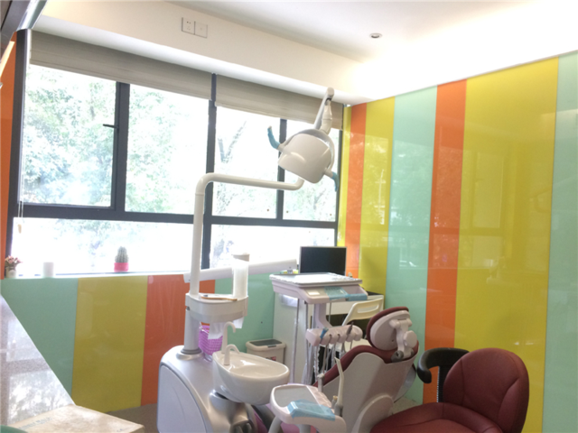

牙周治疗关注的不只是“洗牙”，而是围绕牙龈炎、牙周炎、牙槽骨吸收以及种植体周围组织稳定，建立从基础治疗到维护复查的完整路径。早期发现、早期处理，往往比后期补救更重要。
对于反复出血、牙龈红肿、口臭、牙缝变大、咀嚼不适等情况，应尽快进行牙周检查，明确炎症范围、牙石堆积和支持组织状态，再决定后续治疗节奏。
清楚了解问题进展，才能更好控制炎症



牙周治疗往往涉及基础洁治、综合治疗与种植维护多位医生协同